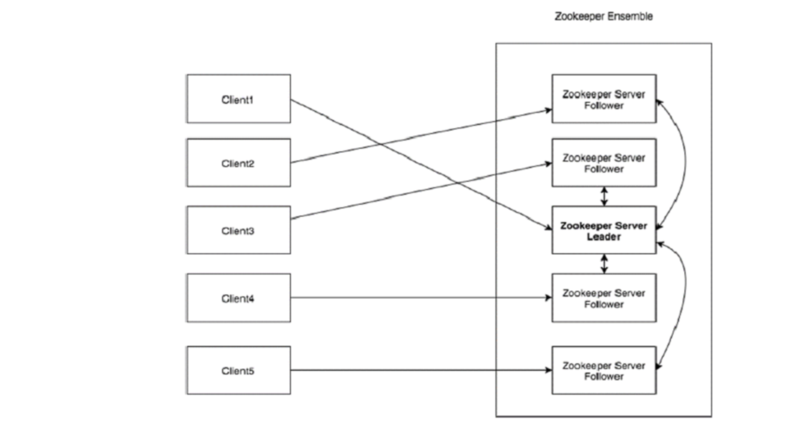
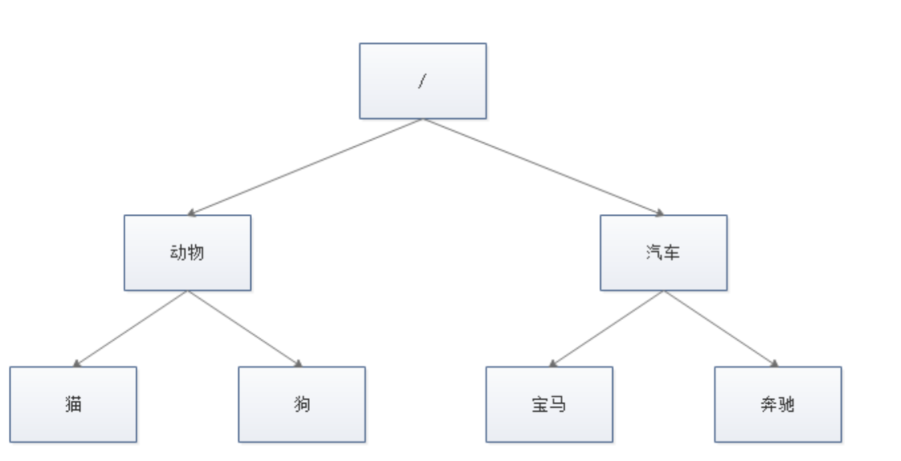
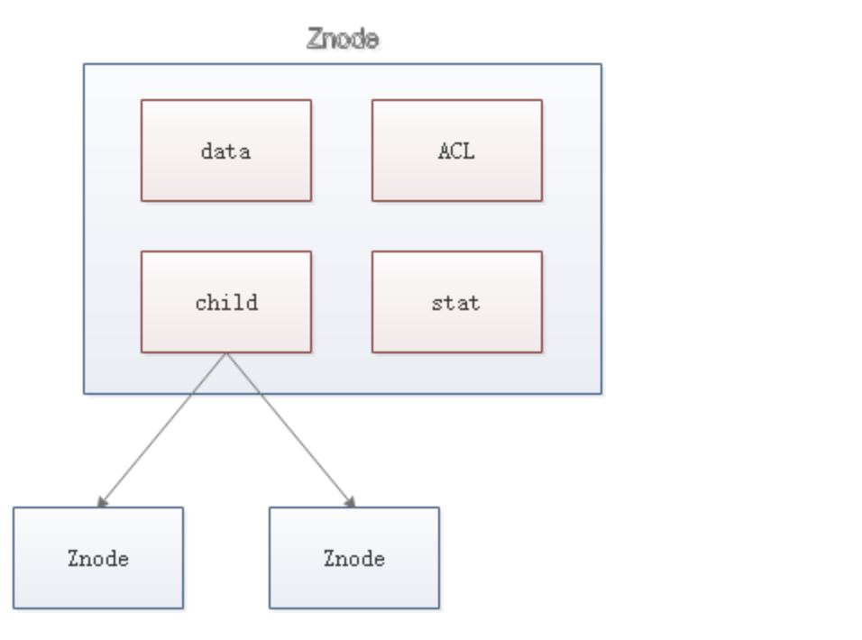
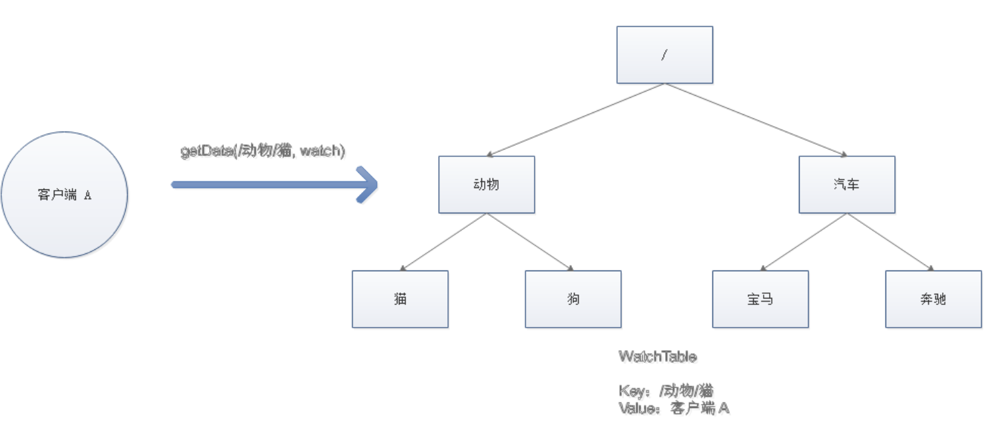
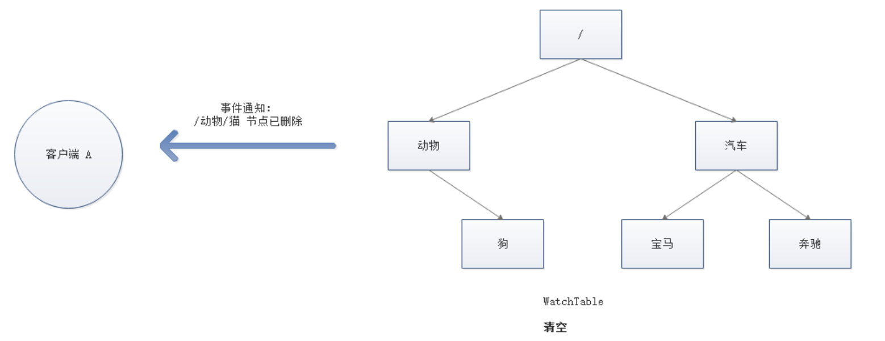

前面花了一段时间去学习SpringCloud的相关知识，主要是理解微服务的概念并使用SpringCloud的一系列组件实现微服务落地。学习这些组件本身是简单的，跟着操作一遍基本就会了，这也得益于Springboot给我们带来了很多便利。实际的应用中也许还会碰到一些坑，但只要我们掌握基本的原理就能够解决。
前面也讲了微服务的解决方案有两个，一个是SpringCloud,另外一个就是Dubbo+Zookeeper，下面我们来学习Dubbo+Zookeeper实现微服务。
在学习微服务的第一篇中，理解了微服务的概念，比较了微服务与单体应用之前的优势和劣势，讲了要实现微服务主要的技术点，最重要的两块在于服务之间的通信和服务治理。
Dubbo+Zookeeper要实现微服务，就必须解决这两个技术点，Dubbo是一个RPC通信框架，它可以实现服务之间的通信。ZooKeeper 是一种分布式协调服务，用于管理大型主机。在分布式环境中协调和管理服务是一个复杂的过程。
上面说Zookeeper是一个分布式协调技术，那么我们就得先来学习什么是分布式协调技术。分布式协调技术主要用来解决分布式环境当中多个进程之间的同步控制，让他们有序的去访问某种临界资源，防止造成"脏数据"的后果。
首先，要明白我们为什么需要分布式锁，一个简单的例子，一般系统上都有一些定时任务，比如做一些数据的清算，如果我们部署了多台服务器，那在这个时候每台服务器都会执行这个定时任务，如果没有一个锁机制，那按照道理来说，这个定时任务就会被执行多次，这样就非常有可能出现脏数据。
这里指的是一个定时任务，既然是定时任务，那么它必然会是同一个时刻进入，这个不需要高并发，我们也需要考虑。还有一种情况是高并发情况下，在分布式环境中，很大概率会存在多个节点上的进程同时访问某一个方法，而很多时候，我们需要保证一个方法在同一时间内只能被同一个线程执行，在单机环境中，Java中其实提供了很多并发处理相关的API，但是这些API在分布式场景中就无能为力了。也就是说单纯的Java Api并不能提供分布式锁的能力。所以针对分布式锁的实现目前有多种方案。
我们需要的分布式锁应该是怎么样的？（这里以方法锁为例，资源锁同理）
可以保证在分布式部署的应用集群中，同一个方法在同一时间只能被一台机器上的一个线程执行。
这把锁要是一把可重入锁（避免死锁）
这把锁最好是一把阻塞锁（根据业务需求考虑要不要这条）
有高可用的获取锁和释放锁功能
获取锁和释放锁的性能要好
实现分布式锁有几种方案：
Memcached：利用 Memcached 的 add 命令。此命令是原子性操作，只有在 key 不存在的情况下，才能 add 成功，也就意味着线程得到了锁。
Redis：和 Memcached 的方式类似，利用 Redis 的 setnx 命令。此命令同样是原子性操作，只有在 key 不存在的情况下，才能 set 成功。
Zookeeper：利用 Zookeeper 的顺序临时节点，来实现分布式锁和等待队列。Zookeeper 设计的初衷，就是为了实现分布式锁服务的。
Chubby：Google 公司实现的粗粒度分布式锁服务，底层利用了 Paxos 一致性算法。
要实现锁，那最基本的功能就有三个：加锁，解锁，锁超时，我们用redis的实现方式来简单的介绍下分布式锁的基本原理，以下代码都为伪代码。
redis实现加锁最简单的操作就是是使用 setnx 命令，其中的key可以根据业务名称来命名，基本模式是命名空间+对应的参数，比如我们要锁住某个商品库存，那我们可以用库存的id作为参数进行加锁，其实这里我们在不同的方法上可以加上相同的锁，比如，有两个方法都需要对库存进行处理，虽然他们并不是一个方法，但我们用同一个命名空间和参数也可以锁住。
setnx（lock_sale_商品ID，1）当我们在进行set方法时，如果key已经存在，说明已经有其他线程得到了锁，抢锁失败，就需要进行等待，如果key不存在，那说明得到了锁，方法就正常运行。
既然有加锁过程，那也就有解锁过程，线程执行完任务，需要释放锁，以便其他线程可以进入。释放锁的最简单方式是执行 del 指令。一旦删除了key，那其他线程就可以正常的获得锁了。
del（lock_sale_商品ID）锁超时是什么意思呢？如果一个得到锁的线程在执行任务的过程中挂掉，来不及显式地释放锁，这块资源将会永远被锁住（死锁），别的线程再也别想进来。所以，setnx 的 key 必须设置一个超时时间，以保证即使没有被显式释放，这把锁也要在一定时间后自动释放。setnx 不支持超时参数，所以需要额外的指令。
expire（lock_sale_商品ID， 30）那整体的伪代码就是：
if（setnx（lock_sale_商品ID，1） == 1）{
expire（lock_sale_商品ID，30）
try {
do something ......
} finally {
del（lock_sale_商品ID）
}
}redis实现分布式锁基本就是按照这个思路，但是这里存在一些问题。
setnx 和 expire 的非原子性
如果我们使用java的指令来进行超时控制，加锁和设置超时时间不是一个原子操作，那如果加锁后进程挂掉了，那此时不会执行设置超时代码，那这个锁就永远不会被解，这样显然是不行的。
解决方案：使用set指令，直接带入超时时间，那这个超时问题就交给redis本身去解决，这样即使java进程出现了问题，redis本身也能够进行解锁。
set（lock_sale_商品ID，1，30，NX）误删
某一个线程A成功得到了锁，并设置了超时时间30秒，但由于这个方法本身执行比较慢，超过了30秒还没执行完，锁过期自动释放了，然后线程B得到锁，随后线程A执行完了，它执行了解锁任务，删除了锁，但我们知道这个时候解的锁并不是自己的，而是线程B的锁，这就是误删了线程B的锁。
解决方案：可以在加锁的时候把当前的线程 ID 当做 value，并在删除之前验证 key 对应的 value 是不是自己线程的 ID。
那加锁的代码：
String threadId = Thread.currentThread().getId()
set（key，threadId ，30，NX）解锁的代码：
if（threadId .equals(redisClient.get(key))）{
del(key)
}出现并发的可能性
在上面的描述中，如果一个方法执行时间过长，那还是有可能会出现并发的可能性，但如果过期时间设置太长也会出现他获取锁的线程就可能要平白的多等一段时间。
了解完redis实现分布式锁后，我们对分布式锁有了一个感性的认识，现在来学习Zookeeper
Apache ZooKeeper是由集群（节点组）使用的一种服务，用于在自身之间协调，并通过稳健的同步技术维护共享数据。ZooKeeper本身是一个分布式应用程序，为写入分布式应用程序提供服务。
ZooKeeper提供的常见服务如下 :
命名服务 - 按名称标识集群中的节点。它类似于DNS，但仅对于节点。
配置管理 - 加入节点的最近的和最新的系统配置信息。
集群管理 - 实时地在集群和节点状态中加入/离开节点。
选举算法 - 选举一个节点作为协调目的的leader。
锁定和同步服务 - 在修改数据的同时锁定数据。此机制可帮助你在连接其他分布式应用程序（如Apache HBase）时进行自动故障恢复。
高度可靠的数据注册表 - 即使在一个或几个节点关闭时也可以获得数据。
分布式应用程序提供了很多好处，但它们也抛出了一些复杂和难以解决的挑战。ZooKeeper框架提供了一个完整的机制来克服所有的挑战。竞争条件和死锁使用故障安全同步方法进行处理。另一个主要缺点是数据的不一致性，ZooKeeper使用原子性解析。
以下是使用ZooKeeper的好处：
简单的分布式协调过程
同步 - 服务器进程之间的相互排斥和协作。此过程有助于Apache HBase进行配置管理。
有序的消息
序列化 - 根据特定规则对数据进行编码。确保应用程序运行一致。这种方法可以在MapReduce中用来协调队列以执行运行的线程。
可靠性
原子性 - 数据转移完全成功或完全失败，但没有事务是部分的。
我们先了解Zookeeper的整体架构，先看下面的图表：

Server（服务器）:服务器，我们的ZooKeeper总体中的一个节点，为客户端提供所有的服务。向客户端发送确认码以告知服务器是活跃的。
Ensemble: ZooKeeper服务器组。形成ensemble所需的最小节点数为3。
Leader:服务器节点，如果任何连接的节点失败，则执行自动恢复。Leader在服务启动时被选举。
Zookeeper 的数据模型是什么样子呢？它很像数据结构当中的树，也很像文件系统的目录。

ZooKeeper节点称为 znode 。每个znode由一个名称标识，并用路径(/)序列分隔，这样的层级结构，让每一个 Znode 节点拥有唯一的路径，就像命名空间一样对不同信息作出清晰的隔离。
那znode里有包含哪些元素呢？

ACL：记录 Znode 的访问权限，即哪些人或哪些 IP 可以访问本节点。
stat：包含 Znode 的各种元数据，比如事务 ID、版本号、时间戳、大小等等。存储在znode中的数据总量是数据长度。你最多可以存储1MB的数据。
Znode的类型
Znode被分为持久（persistent）节点，顺序（sequential）节点和临时（ephemeral）节点。
持久节点 - 即使在创建该特定znode的客户端断开连接后，持久节点仍然存在。默认情况下，除非另有说明，否则所有znode都是持久的。
临时节点 - 客户端活跃时，临时节点就是有效的。当客户端与ZooKeeper集合断开连接时，临时节点会自动删除。因此，只有临时节点不允许有子节点。如果临时节点被删除，则下一个合适的节点将填充其位置。临时节点在leader选举中起着重要作用。
顺序节点 - 顺序节点可以是持久的或临时的。当一个新的znode被创建为一个顺序节点时，ZooKeeper通过将10位的序列号附加到原始名称来设置znode的路径。例如，如果将具有路径 /myapp 的znode创建为顺序节点，则ZooKeeper会将路径更改为 /myapp0000000001 ，并将下一个序列号设置为0000000002。如果两个顺序节点是同时创建的，那么ZooKeeper不会对每个znode使用相同的数字。顺序节点在锁定和同步中起重要作用。
Znode支持的操作及暴露的API：
监视是一种简单的机制，使客户端收到关于ZooKeeper集合中的更改的通知。客户端可以在读取特定znode时设置Watches。Watches会向注册的客户端发送任何znode（客户端注册表）更改的通知。
Znode更改是与znode相关的数据的修改或znode的子项中的更改。只触发一次watches。如果客户端想要再次通知，则必须通过另一个读取操作来完成。当连接会话过期时，客户端将与服务器断开连接，相关的watches也将被删除。
具体的交互如下：
客户端调用 getData 方法，watch 参数是 true。服务端接到请求，返回节点数据，并且在对应的哈希表里插入被 Watch 的 Znode 路径，以及 Watcher 列表。

当被 Watch 的 Znode 已删除，服务端会查找哈希表，找到该 Znode 对应的所有 Watcher，异步通知客户端，并且删除哈希表中对应的 Key-Value。

Zookeeper的基本概念是这些，下一篇将深入其基本原理，学习Zookeeper一致性实现和Zookeeper是如何实现分布式锁的。